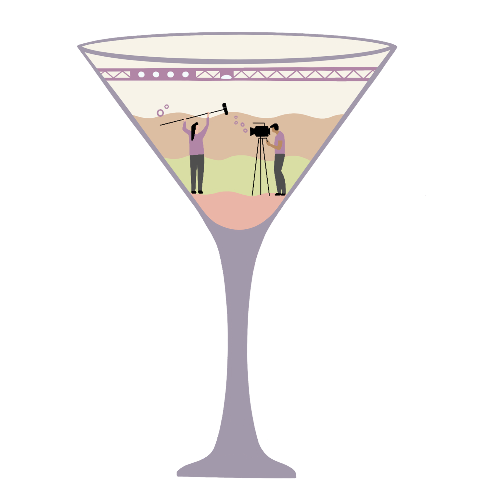

In an era of being sad and lonely in our dorms and apartments, we NERDwestern students might find ourselves needing a special NorthWASTED pick-me-up to take the edge off. Fear not, dear reader, for we mixologists at NBN have compiled a recipe book of the perfect cocktails for each Northwestern school.
Weinberg College of Arts and Sciences
The Weinberger Bomb
-
12 oz. beer or seltzer of choice
- 1 ½ oz. whizkey, rum or vodka in a shot glass
- A dash of overconfidence, shaken, not stirred
For a school with as many majors as Weinberg, it’s only fitting that we choose a drink that encompasses many tastes. Weinberg students, we recommend that you kick back with something simple yet satisfying, like a beer or seltzer.
A beer? That’s it? We’re more interesting than that.
Okay, okay, we get it, you like to party. Introducing the Weinberger Bomb! Grab your favorite beer or seltzer of choice, accompanied by a shot glass of either whiskey, rum or vodka. Pour the canned beverage into a glass, then get ready to drop your “bomb” of hard liquor in (just like how you dropped that fourth class in the second week of Spring Quarter — kaboom!).
School of Communication
The School of Comm Cosmo

- 1 ½ oz. fruit-flavored vodka
- 1 oz. Cointreau
- ½ oz. lime juice
- ¼ oz. cranberry juice
- Your show tune of choice, to chase
For all the thespians, dramatics and Hollywood hopefuls in the School of Communication, we had to create something with enough star power to really blow you away (and with enough kick to ease that awkward sexual tension within your acappella group). Introducing the School of Comm Cosmo. What’s better than a cosmopolitan to encapsulate the drama of Comm, served well-chilled and in a martini glass?
Bienen School of Music
The Bienen Colada
- 6 oz. pineapple juice
- 3 oz. coconut cream
- 1 ½ oz. light rum
- 1 ½ oz. crushed ice
- Soft saxophone, to accompany
Ready to kick back and pretend your practice space in Ryan overlooking Lake Michigan is actually a room on a Royal Caribbean Cruise? Well, hopefully your practice room comes with a blender, because you’re going to need it for the Bienen Colada. Mixologist’s tip: Share it with your entire Latin jazz combo for that authentic feel that you’ve been trying to get for weeks.
McCormick School of Engineering and Applied Science
The McCorpse Reviver No. 3
- 1 oz. gin
- 1 oz. Italian vermouth
- 1 oz. Cointreau
- 1 oz. lemon juice
- 1 dash absinthe
- A sprinkle of sadness, for garnish
Do you McCormick students often find yourselves barely alive, almost entirely lacking a pulse, as your dinosaur of a computer science professor drones on and on about who knows what? Well, for all you budding scientists, mathematicians and engineers, we’ve prepared a drink to revitalize your day and get you going just like the pre-pandemic party animal you used to be! Introducing … the McCorpse Reviver No. 3.
School of Education and Social Policy
The SESP Appletini
- 1 oz. apple juice
- 1 ½ oz. vodka
- ¼ oz. lemon juice
- 1 ¼ oz. green apple schnapps
- A splash of mystery, to top
Little is known about SESP other than, I guess, teaching? For this reason, we decided to warm you all up to the idea of eating apples every day of the rest of your lives (What’s with teachers and apples, anyway?) and give you the perfect teacher’s cocktail: the SESP Appletini. Enjoy this drink while you turn off your Zoom camera and secretly get hammered during office hours. Woohoo!
Medill School of Journalism, Media, Integrated Marketing Communications
The AP Style Adios Motherfucker
- ½ oz. vodka
- ½ oz. rum
- ½ oz. tequila
- ½ oz. gin
- ½ oz. blue curaçao
- ½ oz. simple syrup
- ½ oz. lemon juice
- 1 oz. Sprite
- Pen and paper, for notes
As you Medill students continue to bombard innocent bystanders with your constant questions, interviews and blabbering (All for the sake of what? Journalism? Ew.), consider taking a moment to try a cocktail nearly as aggressive as your interview methods: the AP Style Adios Motherfucker. This new take on a classic Long Island iced tea is surely complicated, yet not quite as complicated as whatever the hell a nut graf is.